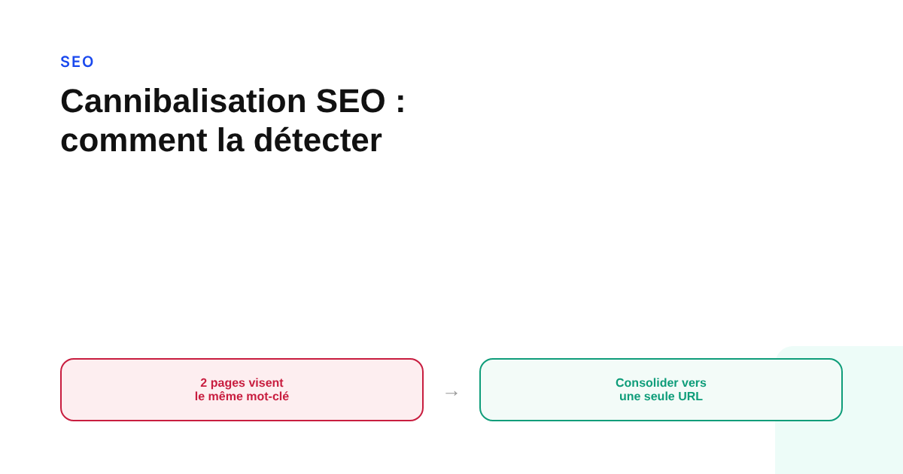
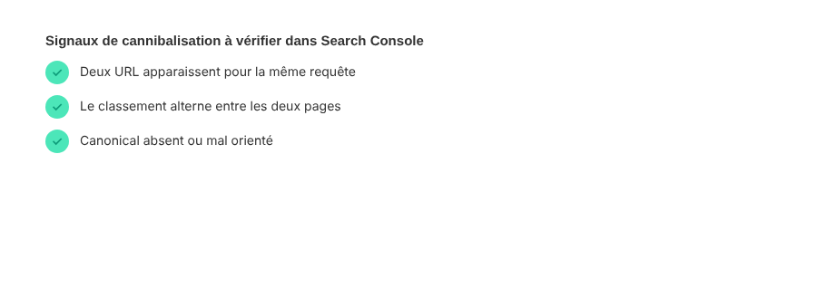

Cannibalisation SEO : comment la détecter et la corriger quand deux pages se font concurrence
Deux pages qui se positionnent sur la même requête ne se partagent pas le trafic entre elles : la plupart du temps, elles le perdent toutes les deux. Voici comment repérer une cannibalisation réelle dans Search Console, et les trois corrections qui s'appliquent selon le cas.

La cannibalisation SEO n'est pas une sanction que Google applique : c'est un symptôme que Google ne corrige pas à votre place. Quand deux pages d'un même site visent la même requête, le moteur ne sait pas laquelle privilégier, et le résultat est presque toujours plus faible que si une seule page concentrait tout le signal. Le problème est fréquent sur les sites qui grossissent sans plan de contenu clair — et il reste étonnamment simple à repérer une fois qu'on sait où regarder.
Ce que Google dit vraiment sur le sujet
Il n'existe pas de documentation Google qui nomme la « cannibalisation » comme une politique ou une pénalité spécifique. Le sujet a surtout été abordé publiquement, au fil des années, par les porte-parole de l'équipe Search de Google en réponse à des questions de webmasters, sans jamais donner lieu à une page officielle dédiée. Ce que Google documente réellement, c'est la consolidation des URL dupliquées : sa recommandation, dans ce cas précis, est d'utiliser une balise canonique pour indiquer quelle version doit concentrer les signaux de classement quand plusieurs URL très proches doivent rester en ligne. La cannibalisation, elle, concerne des pages au contenu différent mais qui ciblent la même requête : la logique de consolidation s'applique, mais la solution n'est pas toujours la même balise.
Le repérer dans Search Console, sans outil tiers
La méthode la plus directe ne demande aucun outil payant : dans le rapport Performances de Search Console, filtrez sur une requête précise, puis ajoutez la dimension Pages à côté de Requêtes. Si plusieurs URL du site apparaissent avec un nombre d'impressions comparable sur la même requête, souvent avec des positions moyennes qui oscillent d'une semaine à l'autre, c'est le signal classique : Google teste plusieurs pages du site sans se fixer, parce qu'aucune ne s'impose clairement comme la réponse évidente.

Trois corrections, pas une seule
La fusion complète des deux pages en une seule ressource plus solide est la correction la plus citée, et la bonne quand les deux contenus répondent en réalité à la même intention sans réelle différence de fond. Mais ce n'est pas la seule option. Si l'une des deux pages est clairement obsolète ou plus faible, une redirection 301 vers l'autre transfère son éventuel capital de liens sans dupliquer l'effort. Et si les deux pages ont, malgré un mot-clé commun, une intention réellement distincte — une page pilier généraliste et un article plus pointu sur un sous-sujet, par exemple — la meilleure correction n'est pas de fusionner, mais de retravailler les titres, les intitulés et le maillage interne pour que chaque page cible sans ambiguïté un angle différent de la requête.
Pourquoi la causalité se vérifie avant d'agir
Deux pages qui apparaissent toutes les deux sur une requête ne sont pas automatiquement en cannibalisation : Google peut légitimement afficher deux pages d'un même site quand elles répondent chacune à une facette différente d'une requête large. Avant de fusionner ou de rediriger quoi que ce soit, il faut lire les deux pages avec l'œil de l'utilisateur qui a tapé cette requête : si l'une répond clairement mieux que l'autre, la correction est simple. Si les deux répondent à des besoins réellement différents, le problème n'est peut-être pas une cannibalisation mais un signal mal exploité — et la pire décision serait de supprimer un contenu qui a sa propre valeur pour résoudre un problème qui n'en est pas un.
Prévenir plutôt que corriger après coup
Le vrai levier de fond reste en amont : une architecture de contenu qui attribue clairement une requête principale à une seule page avant de la publier évite la plupart des cas de cannibalisation qui apparaissent ensuite par accumulation. C'est le même principe qui sous-tend une structuration en cocons sémantiques ou en clusters thématiques : chaque page a un rôle défini dans la hiérarchie, et les nouvelles pages viennent compléter un sujet plutôt que le répéter.
FAQ
La cannibalisation SEO est-elle une pénalité Google ?
Non. Google n'a jamais publié de politique nommant la « cannibalisation » comme une infraction sanctionnée. Le coût n'est pas une pénalité mais une dilution : le signal de pertinence et les liens entrants se répartissent entre plusieurs pages au lieu de renforcer une seule, et Google limite par ailleurs le nombre de résultats qu'il affiche pour un même domaine sur une requête donnée.
Comment savoir si deux pages de mon site se cannibalisent ?
Dans Search Console, ouvrez le rapport Performances, filtrez sur une requête précise, puis ajoutez la dimension Pages : si plusieurs URL de votre site apparaissent avec un nombre d'impressions comparable sur la même requête, c'est le signal à vérifier en premier.
Faut-il toujours fusionner les pages qui se cannibalisent ?
Non. La fusion n'est qu'une des trois options. Si les deux pages répondent en réalité à des intentions différentes malgré un mot-clé commun, la bonne correction est souvent de clarifier l'angle de chacune plutôt que de les regrouper, pour éviter de perdre un contenu qui a sa propre valeur.
Envie d'un audit qui identifie précisément vos pages en concurrence ?
Pour aller plus loin, voir la page SEO, et l'article Structurer un site qui se positionne avec les cocons sémantiques.
Pour continuer sur ce sujet.